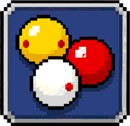

九球
九球
 八球
八球
 斯诺克
斯诺克

三库开伦
九球
八球
斯诺克

三库开伦点击色块即可实时切换球桌周围的背景与氛围光
「随台面」时球杆颜色跟随台球桌颜色；也可单独换成主题贴图。点一下选中主题，再点一下已选中的卡片（右上角带 3D 角标）即可全屏预览：单指拖动旋转，双指捏合缩放
点击色块即可实时更换台呢、桌框、纹理与边缘发光特效（球杆随台面自动协调）
没有正对袋口时辅助线的延伸长度，拖到最左可关闭。
关闭后， 仅在「跟随 / 俯视」两视角间切换，不再拉远到母球视角。
选择后会立即在主菜单高亮，进入对局即生效；对局中经本页或设置页更换也会实时刷新。
安装后首次进入对局（训练或对战）会自动显示一次分步引导，引导你实做「摆白球→瞄准→击球」。 引导走完后不再自动弹出，可随时点击下方按钮重新观看。
仅在「电脑 / 电脑·激进」模式下生效。超时未击球则本回合判负。
本游戏为完全离线的单机版本，不需要联网、无任何广告、不收集任何个人信息。
本作品是开源项目 tailuge/billiards 的衍生作品，遵循 GPL-3.0 协议。 物理引擎实现了真实的球体碰撞、旋转、库边反弹与摩擦模型。
| 开发者 | huang336 |
| 版本 | 1.3.19 |
| 协议 | GNU GPL v3.0 |
| 项目源码 | github.com/huang336-cc/taiqiu_offline |
| 上游项目 | github.com/tailuge/billiards |
本游戏不申请任何权限，不申请联网、存储、定位等任何敏感权限，因此无法自动检查更新。 如需获取最新版本，请自行前往 GitHub 的 Release 页面下载：
本作品是开源项目 tailuge/billiards 的衍生作品。
| 项目 | tailuge/billiards |
| 作者 | tailuge |
| 协议 | GNU GPL v3.0 |
| 基线 | 0.3.1 |
物理引擎、渲染管线、规则判定与电脑对手等核心实现均来自该项目， 版权归原作者及其贡献者所有。在此致谢。
| 修改者 | huang336 |
| 衍生版本 | 奥特曼的台球 · 离线版 |
| 修改日期 | 2026 年 8 月 3 日 |
本作品由 huang336 基于 tailuge/billiards 修改而来。 主要改动：全中文本地化、移除全部联网功能、新增六档画质系统与移动端适配、 新增操作介绍与设置面板、封装为安卓离线应用。
本作品整体依据 GPL-3.0 发布。依据协议第 6 条， 分发二进制形式时须同时提供对应完整源代码， 该源码已随发布页附件一并提供。
你有权自由运行、研究、修改和再分发本作品， 但再分发时须遵循同样的 GPL-3.0 条款。 协议全文：gnu.org/licenses/gpl-3.0.html
| three.js 0.185.1 | MIT |
| JSONCrush 1.1.8 | MIT |
| interact.js 1.10.28 | MIT |
以上组件版权归各自作者所有，依 MIT 协议使用。
本程序不提供任何担保。在适用法律允许的最大范围内， 版权持有者以「原样」提供本程序，不作任何明示或默示的担保， 使用风险由你自行承担。
本应用自 v1.0.4（2026-08-03）起的全部版本变更记录，新版本置顶。详细条目可在每个版本下展开。
球杆预览改用游戏内真实球杆模型：真实长径比 46.7:1 + 游戏内程序化分区贴图，去掉预览自带的"胖棒槌"简化模型
dist/cue-preview-3d.js 自己维护了一套"简化模型"：总长 L=5.0、杆尾半径 0.28，长径比只有 8.9:1；配色也只用球杆卡片上的两个色值（data-c1/data-c2）铺色，再叠一层本地生成的木纹/皮革噪点贴图。而游戏内真实球杆（src/view/cue.ts + src/view/cuemesh.ts）是全长 R*43、杆尾半径 (R*0.23)/0.5，长径比 46.7:1（与真实球杆 147cm/3cm≈49:1 一致），并且杆身、杆尾各挂一张 256×1024 的程序化分区贴图（v1.3.51 起握把/装饰带/端盖三段分区）。两者差了 5 倍多的粗细，所以预览里那根东西"一眼就不是真实球杆"。tools/cue-textures/（入口 entry.ts + 独立 webpack.config.js），把 src/view/cuetexturefactory.ts（19 个主题的程序化贴图工厂，2218 行）与 src/utils/settings.ts 原样打成 dist/cue-texture-factory.js，挂 window.CueGameCue。其中 three 走 external→window.THREE，所以包内不含 three（仅 45KB），且产出的 CanvasTexture 与预览同属一个 THREE 实例，可直接赋给 material.map。该构建已并入 npm run build（新增 build:cuetex 步骤），源码改了贴图产物会自动跟着更新，不会再次脱节。cuemesh.ts：预览新的 buildCue() 按 CUE_GEOM（由 entry.ts 从 src/model/physics/constants.ts 的 R 反算导出）组装四段圆柱 cueButt / cueShaft / cueFerrule / cueTip，比例 0.28 / 0.71 / 0.007 加皮头厚 0.0055，周向分段 9，半径系数（杆尾顶端 ×0.9、皮头顶端 ×0.93）与游戏内完全一致；材质走 MeshPhongMaterial 并对齐 applyCueTheme()——有贴图时 map 取 getCueTexture/getCueButtTexture 且基色置白，auto（随台面）时按 shade(台呢色, +0.12 / -0.28) 派生，光泽优先取主题 finish.shaft/butt、无 finish 且无贴图时回落 50/80。先角固定 0xf0e8d6、皮头取皮肤 tipColor。几何按真实尺寸建好后再整体缩放到预览世界尺度（总长 5.0），因此相机、地面、倒影、光环的既有常量全部沿用，改动收敛在几何与材质上。buildCue 改走真实资源，预览里那份 THEMES 配置表（19 个主题的本地配色/几何分支）与 woodTexture/leatherTexture/plainMetal/makeTexture 等本地绘制器（合计约 680 行）已无任何引用，一并删除，从根源上杜绝"预览与实机两套外观再次跑偏"。cue-preview-3d.js 由 65.6KB / 1640 行降到 42.2KB / 953 行。加载链改为 three.standalone.js → cue-texture-factory.js → cue-preview-3d.js（顺序不可变：贴图工厂把 window.THREE 提升为模块级常量，先注入会拿到 undefined；产物顶部也加了显式守卫，顺序错了会抛出可读错误）。disposeTree() 原先会连 material.map 一起 dispose()。改用全局缓存的贴图后，这会把 CueGameCue 缓存里那张 Texture 的 GPU 资源释放掉，之后再切回该主题拿到的仍是同一个已释放对象，球杆会变纯黑。现改为只 dispose geometry 与 material，贴图由工厂统一持有、随页面生命周期存在。实测 19 个主题连续切换后回头重开，画面像素统计偏差 0.00%。applyLayout() + requestRender()，不重算画布尺寸。若用户在预览关闭状态下转屏，resize 事件发生时浮层是 display:none，canvas.clientWidth 为 0，relayout() 会退回 200×140 兜底并把 vertical 算成 false；再打开预览走的就是这条重建路径，于是渲染缓冲停在 200×140 被拉伸到全屏、aspect 1.429（实际 0.47）、球杆朝向判断也错。现改为重建后补一次 _resize()。实测：横屏 2314×977 / aspect 2.368 / vertical=false；关闭转竖屏再打开 1054×2237 / aspect 0.471 / vertical=true。ANGLE SwiftShader / WebGL 2.0）下跑通：① 19 个主题逐个打开，杆身/杆尾均挂上 256×1024 真实贴图（auto 按设计为纯色派生）、画面非背景像素 67%~68%、平均亮度 49.5~53.5 全在正常区间、无 JS 报错；② 回头重开前 3 个主题，像素统计偏差 0.00%，确认贴图缓存未被误 dispose；③ 同一主题反复开关 4 次，四次统计逐位一致（WebGL 上下文红线未破）；④ 竖屏 1080×2340 下 vertical=true、朝向与相机距离正确；⑤ 单主题轮廓实测：杆尾端厚约 33px、杆头端约 19px，锥度清晰可辨，水平跨度约占画布 79%（baseDist 取全角度最大值以保证旋转不出画，故默认视角下留有边距）。另用 Node 直接加载 dist/cue-texture-factory.js 的发货产物，19 个主题贴图全部生成成功（auto 按设计返回 null），尺寸均为 256×1024。auto 主题的球杆颜色由当前台球桌的台呢色派生，因此选「黑曜石黑」（默认）、「熔岩裂纹」「霓虹蓝紫」「朱红鎏金」这类刻意压暗的桌台时，球杆本身也接近纯黑——预览里看到的正是它在对局中的真实样子。想看明亮球杆，可换一张亮色桌台（如粉色糖果、金辉、全息银），或直接选其余 18 款自带贴图的球杆主题。袋口包边颜色随桌框发光色同步；桌框有发光特效时袋口不再显黑棕
blackpocket（6 个球洞内壁）和 Material.001（袋口包边/金属件）统一改成了 cushionColor。对于「熔岩裂纹」「黑曜石黑」「霓虹蓝紫」「朱红鎏金」「全息银」「粉色糖果」这些带 frameGlow 发光特效的主题，cushionColor 通常被刻意压暗（例如熔岩裂纹库边色 0x2a0804、黑曜石 0x141416），导致明亮发光的外框下袋口区域仍显黑棕，与主题主色脱节。本版在 src/view/assets.ts 的 Assets.tableCustomizationFor 中新增 pocketColor = frameGlow || cushionColor：当主题定义了桌框发光色时，袋口/包边直接取发光色；无发光主题（经典、翡翠、赤焰、蓝宝石、金辉）则回退到原有库边色，保持既有协调感。随后在 Assets.paintTable 中让 blackpocket 与 Material.001 使用 pocketColor 上色。tableCustomizationFor 返回的配色配置对象中，因此 customizeTableScene（GLTF 首次加载）和 recolorTable（游戏内/菜单实时切换球桌皮肤）都会自动带上新的 pocketColor，无需在两处分别维护。同时材质原有的 emissive 仍置黑、metalness 保持 0、roughness 保持 0.75~0.8，确保亮色袋口不会泛白或反光。未使用的本地程序化桌台 TableMesh 路径不受影响。球杆主题预览改全屏 · 单指拖动 360° 旋转 · 双指捏合缩放（触发方式改为「选中后再点一下」）
.cue-preview-overlay 写死 width:300px; height:130px，在 2340×1080 的横屏上只占 13% 宽、12% 高；② 更关键的是预览里建的是截断球杆：showFull 默认 false，只建模到总长 4.1（完整长度 5.0），先角（ferrule）和皮头（tip）根本没有网格，玩家看到的永远是一根没头的杆；③ 机位是为 300×130 手调的 camera.position.set(-2.2, 1.4, 2.8) / lookAt(0.6, 0, 0)，且带一个 -0.45 的偏移常量——那是给截断杆（local Y ∈ [-2.5, 1.6]）配重心用的，换成完整杆会整体偏左。三者叠加，导致「看不清细节、也看不完整」。buzz(10) 触感反馈），再点一下已选中的卡片即全屏弹出预览。已选中的卡片右上角会显示一个金色 3D 角标作为可点提示（角标选择器带 #cueThemeCards 前缀限定，因为 .skin-card 是球桌 / 场景 / 球杆三类卡片共用的类名，不加限会让球桌和场景卡片也长出角标）。首次进入时会提示一次「再点一下卡片可全屏预览 3D 效果」，用 localStorage 记录，不再重复打扰。同时移除了长按相关的 pressTimer / longFired / onPointerRelease 与 .cue-card-longpress 样式。.cue-preview-overlay 由固定 300×130 改为 inset:0；z-index 由 60 提到 3000（避免被底部操作条盖住）；移除 pointer-events:none（旧值是为了让长按不穿透，现在浮层本身要接收手势，必须放开）。内部改为 flex 纵向三段——顶部一行是主题名 + 44×44 的大关闭按钮（保证手指点得中），中间 .cue-preview-stage 是 flex:1 的画布舞台并带 12px 圆角与金色描边，底部一行是操作提示「单指拖动旋转 · 双指捏合缩放」。原来的主题名 / 提示语由 position:absolute 改为正常流式排布，不再与小窗坐标耦合。showFull 改为 true，渲染总长 5.0 的完整杆，先角与皮头都在。摆放统一交给新的 applyLayout()：横屏把杆放平到 X 轴、position.x = 0（完整杆的中心就在原点）；竖屏（宽高比 < 1）保持竖直并隐藏地面、光环、倒影，否则竖直的杆会穿过 y = -1.35 的地面。地面光环半径由 3.3~3.38 放大到 3.9~3.99 以匹配更长的杆。position/lookAt，相机改由 orbit = { yaw, pitch, zoom } 每次渲染前经 applyCamera() 计算。水平方向 yaw 完全自由 360°；俯仰 pitch 横屏限位 -18° ~ +20°（下限是硬边界：相机 y = d·sin(pitch) + pan，再低会掉到地板 y = -1.35 以下导致倒影穿帮；看端盖细节靠 yaw 转到杆头正对相机即可，不需要大俯仰，限位还能让球杆始终接近水平、占满屏幕宽度），竖屏因地面已隐藏放宽到 ±70°。默认视角 yaw=30 / pitch=12 / zoom=1。FOV 仍保持 34°（26°~40° 之间近端膨胀比只从 1.16 变到 1.23，改了不划算）。computePan() 用不动点迭代 du += m·d·tanV 逼近居中平移量，步长里的深度用的是包围盒中心深度 d。但球杆近端角点的实际深度只有 d − 2.5（约近 2.5 倍），步长因此超调约 2.5 倍。实测在球杆几乎正对镜头（yaw ≈ 85°~95°）时迭代来回震荡、完全不收敛，包围盒偏心高达 0.40 NDC（约半个屏幕），球杆会被推出画面。推导后可证：相机沿 right/up 平移 T = dr·r + du·u 时，由于 {r, u, v} 正交，有 depth = d − P·v（与平移量无关）、xc = P·r − dr、yc = P·u − du（两轴彻底解耦）。于是每个轴上的目标函数 max_c((a_c−x)/w_c) + min_c((a_c−x)/w_c) 都是 x 的分段线性严格递减函数，二分必然收敛。改为二分求解后，全角度偏心从 0.40 降到 1.7e-5 NDC（约 0.02 像素）。baseDist 的拟合也改为对距离二分，并修正了采样漏点：旧 fitDistance() 把「距离」与「居中平移」交替迭代（由 |xc| 反解 d、再用新 d 重算平移，往复 4 次），在球杆正对镜头时会以约 0.5 的公比缓慢下滑，6 次迭代后仍偏大约 1%，且收敛性没有保证。改为：先用 pan=0 时的反解值作上界（未居中时 max|n| ≥ 跨度/2，故必为真值上界），再对距离二分（居中后半跨度随距离单调递减，已按 d 从 0.6 到 60 逐点验证）。同时把拟合采样从 yaw ∈ [0, 20, 40] 放宽到 0°~180° 每 6°（31 个样本）——只采 0~180 是因为包围盒中心对称、(yaw, pitch) 与 (yaw+180, −pitch) 等价；步长 15° 会漏掉真正的最差点导致 0.48% 出画，6° 时残余出画仅 0.006%（约 0.03 像素）。baseDist 仍取全姿态最大值（静态，不随角度变化），以保证转到任何角度都不出画、也不会出现画面「呼吸」。src/view/dom/aimslider.ts 实现，并针对 Android WebView 的已知陷阱逐条处理——① preventDefault() 必须是 pointerdown 的第一行；② preventDefault() 之后绝不能再调 setPointerCapture（会立刻触发 pointercancel）；③ 监听器挂在 window 的捕获阶段，手指移出元素也能继续跟；④ 忽略非本次手势的 pointerId；⑤ 双指捏合中抬起一指后重新锚定，避免视角跳变。另屏蔽 gesturestart/gesturechange/gestureend 与 contextmenu；桌面端补了滚轮缩放便于调试。灵敏度为「横拖满屏宽 = 转 180°」。requestRender()（同一帧内 N 次手势事件只合并成一次渲染）与 renderOnce()；_loop() 退化为单次渲染，不再推进 spin/floatPhase，setAutoRotate() 收到 true 也只渲染一帧。实测同一帧内 10 次 move 只渲染 1 次，静止 1 秒渲染 0 次，比旧的常驻 rAF 循环省电。dispose() + forceContextLoss() 销毁了 WebGL 上下文、而 WebView 无法重建。本版本延续既定策略：renderer 整个页面生命周期只创建一次、永不销毁，关闭浮层只调 stop()；dispose() 保留但加注释标明禁止调用。切主题时改用 disposeTree() 只释放旧的几何体与贴图（在 scene.remove() 之前调用，否则会漏），实测连切 5 个主题后贴图数 8→8、几何数 16→16，无泄漏。全屏下 setPixelRatio 上限由 2 压到 1.5（DPR2 全屏约 1000 万像素，中低端机吃不消）。headless_shell 又不含 SwiftShader，所有 --use-gl=angle/swiftshader/egl 组合都拿不到 WebGL 上下文；改用 Xvfb :99 + Mesa 软件光栅化 + headless=False + --use-gl=desktop 才拿到真实的 ANGLE (SwiftShader) / WebGL 2.0。在此基础上跑了 31 条断言全部通过，其中关键几项：三种画幅（APP 横屏 2340×1080 / 桌面 1280×720 / 竖屏 1080×2340）下各扫描 1440~2088 个姿态，峰值填充率 99.98%~100.01%（既不出画也不保守）、最大偏心 1.7e-5；单指横拖 260px 实测 yaw 变化 −20.22°（期望 −20.22°）；pitch 精确夹在 −18.00°/+20.00°；从 zoom=1.6 张开一倍精确得 0.800（验证捏合比例本身）；捏合中抬指重锚 Δyaw=0.000°；缩到最小时相机距离 3.231 > 包围球半径 2.531，且 7 个角度亮度均落在 28.8~57.4 的正常区间（不会退进球杆内部）；反复开关 4 次画面均有内容（非清屏色像素 64.3%，并用截图法交叉验证得 55.5%）；无 CONTEXT_LOST 与 JS 报错。另用 Node 直接抽取 dist/cue-preview-3d.js 里的真实函数做数值验证（保证「被测代码 === 发货代码」），六种画幅全部通过，relayout() 耗时 2.3~2.9ms。ZOOM_MIN 原先写死 0.35，在横屏（baseDist ≈ 4.27）下对应相机距离只有 1.50，远小于球杆包围球半径 √(2.5²+0.28²+0.28²) ≈ 2.53——双指捏合到底时相机会直接穿进球杆里，看到的是背面 / 内壁。实测 yaw=88°（杆头几乎正对镜头）时画面平均亮度从 51 崩到 4.7（几乎全黑），yaw=30° 时又过曝到 172。现改为在 relayout() 里按下限动态求解：zoomMin = max(ZOOM_MIN, (FIT_R + SAFE_CLEAR) / baseDist)，其中 SAFE_CLEAR = 0.7 是相机与包围球表面之间保留的最小间隙。横屏得 0.756（仍可再拉近约 25%，配合 360° 旋转足够看清细节），竖屏 baseDist ≈ 9.90 得 0.316、由绝对下限兜到 0.35。转屏导致下限变大时会把当前 zoom 一并夹回来，避免竖屏下残留「相机在杆里」的姿态。修复后拉到最近时各角度亮度稳定在 28.8~57.4。scripts/bump-version.py 的版本号扫描：脚本的 current_max_version() 原本直接对文件全文跑正则，会把 HTML 注释里写的「正在开发的版本号」也算进最大值——本次开发时写的注释 <!-- 球杆 3D 预览浮层（v1.3.52：…）--> 就导致脚本认为 v1.3.52 已是旧版本、直接跳到 v1.3.53。现已改为扫描前先用 re.sub(r"<!--.*?-->", "", txt, flags=re.S) 剥离 HTML 注释。（上一版已修复过同一脚本的插入锚点缩进逐版劣化问题。）球杆视觉全面重做（杆身与杆尾贴图拆分 · 12 款特色皮肤杆身材质按描述重制 · 12 款握把与端盖造型按描述重制 · 新增材质光泽参数 · 先角改浅米白色硬质材质）
CueMesh.applyCueTheme() 给 cueShaft 与 cueButt 两个网格赋的是同一张 getCueTexture() 生成的 256×1024 贴图，仅靠 UV 各取一段。结果是握把、杆尾装饰带、端盖三者在贴图上没有独立坐标区间，任何「握把什么材质、杆尾嵌什么环、端盖什么造型」的描述都无法落地，只能做出一根从头到尾一个花样的杆。这正是本次 12 段描述在原架构上无法实现的根本原因。cuetexturefactory.ts 新增导出 getCueButtTexture(themeId)，与原有 getCueTexture(themeId) 分离；杆尾贴图按轴向划为三段——0 → GRIP_END(0.58·H) 握把区、GRIP_END → DECOR_END(0.84·H) 杆尾装饰带、DECOR_END → H 端盖区（画布 W=256 周向 × H=1024 轴向）。cuemesh.ts 的 applyCueTheme() 改为按网格名分派：cueButt 取杆尾贴图，cueShaft/cueFerrule/cueTip 取杆身贴图。遗留 6 款主题（dragon / azure / minions / peppa / qilin / ultraman）在 getCueButtTexture() 内回退到 getCueTexture()，表现与改版前完全一致，无回归。build*Shaft() 绘制函数——墨云龙阙：乌墨黑致密木底 + 细腻暗金龙鳞浮雕（44×16 径向渐变鳞片，中心暗、边缘淡金、细金描边）+ 连绵云纹环绕；青竹听风：浅青竹底 + 清晰分段竹节轮廓，细银线勾边，叠加细微纵向竹丝纹；凤羽鎏金：黑檀底 + 弧形鲍鱼贝贴片按凤凰羽翼形态排布，细鎏金线勾边，贝母带自然虹彩；千里砚山：青灰石砚哑光底 + 淡墨山水浅浮雕，远山轮廓朦胧、整体低饱和；星核暗芒：深空哑光黑金属磨砂 + 细碎嵌入式星尘颗粒 + 青蓝电路纹螺旋延伸；霓虹溯光：半透深紫玻璃 + 粉蓝渐变带状结构沿杆身螺旋延展，内部色带层次通透分明；虚空裂隙：纯哑光炭黑金属 + 纵向数道凹陷裂隙，缝内填充半透幽紫；幽刺夜影：炭黑金属 + 放射状尖刺暗纹 + 小块深海贝母幻彩珠光；烬火焚风：黑红渐变底 + 自然熔岩龟裂纹，缝隙填暗红；云糖幻梦：粉白渐变半透果冻 + 柔和朦胧云朵暗纹；冰晶雪魄：透白半透明冰晶 + 内部自然冰棱丝状纹 + 边缘薄冰切面轮廓；万象权杖：黑金撞色金属 + 复古欧式几何浮雕（凹槽菱形 + 金框 + 内十字 + 四角卷草涡卷），层次立体。finish：settings.ts 的 CueThemeDef 增加可选字段 finish?: { shaft: number; butt: number }，映射到 MeshPhongMaterial.shininess，并在 applyCueTheme() 中按杆身段 / 杆尾段分别套用。取值按描述里的材质语义标定：千里砚山（石砚哑光）12/10、虚空裂隙（哑光炭黑金属）18/15、墨云龙阙 22/18 走低调厚重路线；冰晶雪魄 95/80、霓虹溯光 88/70、万象权杖 78/68、云糖幻梦 72/62 走高光通透 / 抛光金属路线；青竹听风 34/28、凤羽鎏金 62/55、星核暗芒 28/22、幽刺夜影 42/34、烬火焚风 32/26 按各自材质落在中间区间。未配置 finish 的主题沿用原有默认光泽。cuemesh.ts 中先角材质由原先的银白 0xe5e5e5 改为浅米白 0xf0e8d6，shininess 提到 100 以体现硬质感，与描述中「先角为浅米白色硬质材质」一致。srand(s) / rnd() / rr(a,b)，LCG），每款皮肤固定种子，保证同一版本每次构建出的贴图完全一致，不会出现纹样闪烁或不同机器出图不一致。构建侧 webpack 5.109.2 compiled successfully；tsc --noEmit 对 cuetexturefactory.ts / cuemesh.ts 零报错（仓库其余 39 条报错集中在 view/sound.ts、view/view.ts、view/assets.ts 等历史遗留文件，与本次改动无关）。另用 esbuild + 无头 Chromium 离屏渲染出 13 张贴图预览图（all-cues.png 总览 + 12 张单款），逐款比对描述后完成视觉验收。修复音效力度标定错误（碰撞参考速度 60→5 · 击球 70→5.2 · 进球 55→2.6 · 碰库改为按力度合成 refSpeed=6）
maxPower = 160·R ≈ 5.24（单位/秒），实际碰撞/击球速度普遍落在 0.3 ~ 5.4 之间；但 sound.ts 的 intensityStep(speed, refSpeed) 把 refSpeed 设成了碰撞 60 / 击球 70 / 进球 55，导致 speed/refSpeed 永远 < 0.1，量化档位恒为第 0~1 档（最软）。结果：球碰撞声、进球声、击球声都听不出力度差异且整体偏软——正对应用户反馈「球碰撞声音不对 / 进球的撞库声音不对」。Cushion 分支原本直接取构建时固定预生成的单一缓冲 genCushion(n, sr)（无力度参数），音量公式 0.3 + incidentSpeed/40 在速度约 2.8 时即饱和到 0.37，音色更是一成不变。这正是用户反馈「碰库的声音没按碰撞力度调整」。60 → 5、击球 70 → 5.2、进球 55 → 2.6（落袋速度通常较慢 0.2~3）、碰库改用 intensityStep(incidentSpeed, 6)。标定后力度→档位映射覆盖玩法全程：轻碰≈低档、中等≈中档、大力对撞/重撞库≈高档，音色与响度随力度连续变化。genCushion(n, sr, k) 增加力度系数 k——轻碰主体频率 280Hz、衰减长(75ms)、摩擦高频弱 → 沉闷柔软的「噗」；重撞主体 640Hz、衰减短(30ms)、摩擦高频强(1900Hz) → 清脆短促的「嗒」；音量 0.3 + intensityK(step)*0.7 跨 0.35→1.0 约 3 倍响度差。删除原先的固定预生成 prebuildCushion()。修复电脑难度显示被 play.html 语言切换脚本覆盖的问题（比分栏不再显示回「电脑」）
BrowserContainer 写入带难度的 Session.opponentName、并让 Hud.updateScores 真正写入 p2 标签，但 dist/play.html 底部有一组语言切换兜底脚本（applyScoreLabels / watchScoreLabels），每 400ms 轮询检测 #scP1Label / #scP2Label，只要 URL 带 bot= 就把 p2 名强制覆盖成「电脑」或「CPU」。这会把 Hud 已经写好的「电脑(稳健) / 电脑(激进) / 电脑(专业)」再次覆盖回「电脑」。现改为：若 p2 标签当前内容已包含「(」，说明 Hud 已写入带难度名称，直接跳过覆盖；仅对初始静态文本「对手 / Opponent」做兜底，且不再轮询破坏已有值。play.html?bot=ClawBreak / TheFarJaw / Professional，确认 #scP2Label 分别为「电脑(稳健) / 电脑(激进) / 电脑(专业)」；无 bot= 时仍为「对手」。修复击球点复位（setSpin 因 aimInputs disabled 早退→改用 aim.offset.set + updateAimInput）· 修复电脑难度显示（BrowserContainer 写入带难度对手名 + Hud.updateScores 真正写入 p2 名）
Aim 构造函数里调用 table.cue.setSpin(new Vector3(0,0,0), table) 来复位击球点，但 playShot() 上一杆已对 aimInputs.setDisabled(true)，每杆 new Aim 时 aimInputs 仍处于 disabled 状态，cue.ts 的 setSpin() 内部 if (this.aimInputs.isDisabled()) return 直接提前返回，复位被「吞掉」，所以「击球后自动复位白球击球点」实际从未生效。现改为直接清零偏移 table.cue.aim.offset.set(0,0,0) 并调用 table.cue.updateAimInput()（updateAimInput 内部的 updateVisualState 不检查 disabled，可可靠刷新白球击球点 UI），无论玩家还是电脑击球后，下一杆起击球点都回到球心。同步删除了只用一次的 Vector3 import。Hud 在 Container 父类 super() 中构造，早于 BrowserContainer 写入 Session.opponentName，构造时读到 undefined 只能用兜底「电脑」；② Hud.updateScores(...) 原本完全忽略传入的 _p1Name / _p2Name 名字参数（只写分数），且每次 updateScoreHud 都会用 opponentName 覆盖 p2 名，导致即便写入难度也被冲掉。现双向修复：在 BrowserContainer 中按 bot 名写入带难度的双语对手名（ClawBreak→电脑(稳健)/CPU(Steady)、TheFarJaw→电脑(激进)/CPU(Aggressive)、Professional→电脑(专业)/CPU(Pro)）；并让 Hud.updateScores 真正把 _p1Name / _p2Name 写入对应标签，每次刷新比分时都会带上难度，彻底解决时序与覆盖问题。画质问题修复（最高档掉档 + 球体锯齿）：
computeCappedDPR() 原 switch 只到 case 4，QualityLevel 最高为 5，导致选「最高画质」时落到 default = 2，渲染分辨率反而被压到 2x（比 4 档的 2.5x 还低），锯齿更重。现显式给出 case 5 → 3x 超采样，调到最高档真正以 3 倍像素渲染压制锯齿。BallTextureFactory 创建的号码 CanvasTexture 此前未设各向异性，投影到球体侧面（掠射角）时各向同性采样产生严重锯齿与摩尔纹（即「球体画质很差」）。现设置 anisotropy=16、generateMipmaps=true、minFilter=LinearMipmapLinearFilter，驱动会自动 clamp 到设备上限，球体侧面号码清晰度与边缘锯齿显著改善。3 项游戏内优化（删除桌面网格线 · 击球后自动复位白球击球点 · 比分栏电脑显示难度）：
src/view/view.ts 中移除 this.scene.add(new Grid().generateLineSegments(...)) 调用，桌面不再显示蓝色/白色网格辅助线，保持桌布干净。src/controller/aim.ts 中，每次进入瞄准状态且非自定义初始球局时，调用 table.cue.setSpin(new Vector3(0,0,0), table) 并将 elevation 置 0，确保玩家击球后、电脑击球后、自由球摆球后，白球击球点都自动回到中心正击位置。src/view/hud.ts 中读取 ?bot= URL 参数，把 ClawBreak / TheFarJaw / Professional 映射为「稳健 / 激进 / 专业」，比分栏 p2 标签现在显示为「电脑(稳健)」「电脑(激进)」「电脑(专业)」（英文环境显示 CPU(Steady) 等）。恢复变更履历详细格式（v1.3.40-44 条目扩展为完整多 li · bump-version.py 改为生成详细条目结构）：
<li> 条目，并保留约束条目在最后，使自动生成的章节在结构上也与手动维护的详细格式一致。修复变更履历错位并恢复入口（bump-version 插入点修正 · 变更履历按钮恢复 · 历史条目归位）：
<div class="setting-group">」，而该位置位于「游戏设置」屏（语言分组之前），导致 v1.3.40 起每次版本迭代都把变更履历错放到设置页顶部。现已将插入点改为「变更履历屏 #screen-changelog 内、第一条历史条目之前」，新版本只会置顶在变更履历屏。关于页移除「变更履历」按钮：
2 项展示层优化（球杆预览恢复锥度+侧前方透视填满弹窗 · 预览弹窗改卡片右侧避免手指遮挡）：
cue-preview-3d.js 中保留 butt→grip→ring→shaft（到杆身约 70%）的完整锥度变化，仅去掉最尖尖的皮头；同时把相机改为侧前方透视（PerspectiveCamera 34°，position (-2.2, 1.4, 2.8)，lookAt (0.6, 0, 0)），让球杆从画面左下延伸至右上，填满 300×130 弹窗且一眼可辨认为真实球杆。menu-cn.js 的 positionCuePreview 中改为优先放在卡片右侧，空间不足放左侧，垂直方向与卡片中心对齐，避免手指遮挡。2 项展示层修正（球杆预览弹窗居中占满+防手指遮挡 · GLTF 袋口颜色真正统一）：
cue-preview-3d.js 的相机/球杆比例联动，让杆身横置后尽量撑满弹窗；同时把弹窗放在卡片上方，避免手指压住预览区。blackpocket / Material.001 改库边色后，在浅色主题下因原材质保留金属高光与自发光而发白发灰。本版在 Assets.paintTable 中同步把这些材质的 emissive 置黑、metalness 降为 0、roughness 提到 0.75~0.8、关闭多余纹理与 specularIntensity，使袋口/包边与库边色真正一致。2 项展示层改动（袋口包边改库边主题色 · 球杆预览仅展示粗段下半部分）：
blackpocket）和未命名包边件（Material.001）使用固定深色，与部分桌布主题不搭。本版在 src/view/assets.ts 的 Assets.paintTable 中让这两类材质跟随当前皮肤的 cushionColor 上色，切换主题时袋口自动联动，视觉更统一。dist/cue-preview-3d.js 的 buildCue 中改为仅渲染球杆 butt（杆尾）、grip（握把）、ring（装饰环）和 shaft（杆身前 70%），去掉细长的先角和皮头，使预览长度更贴近真实粗段。2 项 v1.3.38 后续修复（球杆预览渲染质量 · GLTF 桌台球洞/凸点）：
scale.y = -0.85，导致反射沿长轴被压短、与主杆错位，看起来像“断节/多段”。改为对 pivot 组做地面镜像缩放，并整体减弱反射透明度；低端机不再强制 MeshLambertMaterial（太平、像塑料），统一用 MeshPhongMaterial 并补默认柔和高光；同时增强主光/轮廓光、压暗装饰环/刻度线，让杆身更立体真实。TableMesh），真机游戏实际加载的是 GLTF 模型桌台，所以袋口/凸点问题未生效。现 Assets.paintTable 同步处理 GLTF 材质：blackpocket（6 个球洞）取库边色上色、Material.001（袋口包边/金属件）取桌框色、diamond（桌边菱形标记小凸点）直接隐藏。本地桌台路径的改动继续保留。3 项界面优化（变更履历去嵌套框 · 桌洞随主题变色去凸点 · 球杆预览横置加长）：
<div class="setting-group"> 嵌套包裹，浏览器自动补闭合导致 v1.3.29~v1.3.37 一串条目出现多层同心圆角框。本版重写该区包裹结构，全列表仅保留单层外框，DOM 标签平衡校验通过（div 开合 139=139）。0x445599，与不同桌布皮肤格格不入。现 TableMesh.generateTable 按当前 Settings.tableSkin 取库边色（cushionColor）给 6 个球洞上色，切桌布即联动；同时去除桌边 12 个 knuckle 小凸点（视觉冗余、用户反馈突兀），仅保留球洞本身。物理/碰撞由 PocketGeometry 常量决定，不受影响。1 项球杆预览修复（根因：脚本加载期崩溃导致全主题白屏）：
params 配置里误引用了函数作用域外的 cols 变量，导致整个 cue-preview-3d.js 在浏览器解析阶段就抛出 ReferenceError 崩溃，所有主题预览都无法渲染（并非某些主题失败，而是整页脚本挂掉）。emissive 改为具体色值（0xff3a1a），消除非法引用；并用 jsdom 真实执行每个主题的 buildCue 验证，13 个主题全部通过。1 项球杆预览「主题真实效果」定制（12 个主题独立材质/纹理/造型）：
menu-cn.js 把主题 data-pattern 传入 CuePreview3D，cue-preview-3d.js 按主题 ID 分支生成完全不同的球杆外观。c1/c2 自动派生。MeshLambertMaterial。1 项球杆预览品质优化（更粗壮、更有质感、主题色更协调）：
MeshPhongMaterial/MeshStandardMaterial，低端 WebView 自动降级 MeshLambertMaterial。c1 / 深色 c2 自动派生，避免金/绿与粉紫主题不搭。1 项球杆预览「第二次起白屏」修复（renderer 只创建一次、永不复创）：
dispose() + forceContextLoss() 释放 WebGL 上下文，第二次长按又 new WebGLRenderer 新建上下文；真机 WebView 在首个 context 被销毁/丢失后，再次创建 context 会失败或拿到损坏的 context，导致后续全部白屏。stop()），不再 dispose / 置空 / 释放上下文。第二次及以后预览直接复用同一 renderer 与 scene，仅切换主题并继续自转。同时在 init() 失败与渲染循环中做空引用防御。1 项球杆预览真机白屏修复（three.js 稳健化）：
alpha:true + 强制 renderer.setClearColor(0x0a1020)，移除 shadowMap / 环境贴图 / 背景纹理，改用纯色 MeshLambertMaterial 材质，仅保留基础多光源（Hemisphere + Directional）。同时给预览 canvas 加 CSS 暗蓝兜底背景，确保即使 WebGL 合成异常也不会透出白色。1 项球杆预览升级（改用 three.js 电影级写实 3D 渲染）：
three.standalone.js（r185，离线自包含，挂 window.THREE）与 cue-preview-3d.js（CuePreview3D 类），长按时按需加载一次；单一 WebGLRenderer，松手即 dispose() + forceContextLoss() 释放上下文，避免多次预览累积丢上下文。1 项球杆预览渲染修复（彻底移除 WebGL 3D 路径，统一走 2D）：
CueViewer3D 路径在真机 WebView 下新建第二个 WebGL 上下文会触发「上下文上限 / 上下文丢失」，着色器无法正常出图，canvas 被当作 2D 拉伸铺满整窗。CueViewer3D / ensureCueViewer3D / webglSupported，球杆预览 100% 走已真机验证的 2D 整杆渲染（带绕长轴自转模拟 3D 转动）。所有设备无歧义，不再有任何走 WebGL 的可能。1 项球杆预览可靠性修复（改用可靠 2D 渲染，彻底解决黑屏）：
2 项球杆主题预览优化（小窗定位 + 修复黑屏）：
ensureCueViewer3D 的尺寸检查 clientWidth < 2 返回 null 且不再重建，导致 viewer 永不创建、真机（尤其 WebView 同步读取 clientWidth=0）全黑无任何物体。修复：用双 requestAnimationFrame 确保布局完成、canvas 有真实尺寸后再初始化 viewer 并设置主题 / 自动旋转；WebGL 不可用时降级 2D 整杆预览并做轻微摆动模拟旋转。仅改菜单展示层，未改动物理 / 挥杆动画 / 碰撞参数。1 项 Bug 修复（手机竖屏无法进入游戏）：
@media (orientation: portrait)）。此前该遮罩以 position:fixed; inset:0; z-index:10000 全屏盖住并屏蔽游戏交互，导致手机竖屏下点「开始游戏」后落到死墙、对局起不来，看似「无法跳转 / 无反应」。现竖屏下也能正常进入与游玩（游戏本身已适配 orientationchange 重渲染）。1 项交互优化（球杆主题预览改为长按弹出 + 自动旋转）：
1 项优化（球杆主题预览框收窄 + 3D 可拖拽预览）：
1 项新功能（12 款特色球杆皮肤 + 实时预览）：
1 项优化（英文版补全未翻译文案）：
t(key) 运行时函数，按 Settings.get().language 取值；aim/placeball/placeallballs/drilloptions/rules/*/boteventhandler/matchresult 等所有渲染文案（击球/摆球/犯规/球局结束/你赢了你输了…）改为 t("...") 调用；旧 T 通过 Proxy 兼容保留为中文；② 4 款新球杆主题补 EN 名：奥特曼 / 霓虹脉冲 / 青竹 / 墨玉 → Ultraman / Neon Pulse / Bamboo / Black Jade；③ 6 款新桌布补 EN 名：黑曜石黑 / 熔岩裂纹 / 霓虹蓝紫 / 朱红鎏金 / 全息银 / 粉色糖果 → Obsidian Black / Lava Cracks / Neon Blue-Purple / Crimson Gold / Holographic Silver / Pink Candy；④ in-game 帮助页 (help.html) Touch controls / Power & Stroke / Camera 区块补全：被 <b> 拆分的文本节点（左右拖动 / 上下拖动 / 双指捏合 / 击球按钮 / 力度条 / 母球图示 / 「+」按钮 / 复位按钮 / 细微瞄准条 / 视角 / 力度≈60%）逐段加 EN；⑤ 主菜单「操作介绍」与「关于」区块补全：基本操作 / 加塞与杆法 / 摆球 / 视角切换 / 小技巧 / 关于 等区块的所有 <b> 片段与表格表头（开发者 / 版本 / 协议 / 项目源码 / 上游项目）逐段加 EN；⑥ SVG 圆盘标签高杆 / 低杆 / 左塞 / 右塞 与示意图「力度 ≈ 60%」 同步补 EN。仅文案层改造，未改动任何物理 / 渲染 / 布局。2 项优化（台球桌外观设置合并 + 最后一行卡片不再拉伸）：
auto 主题改为跟随当前台球桌外观的台呢色（杆身提亮 0.12 / 杆尾压暗 0.28），切换台面即时联动球杆配色。.skin-card 用 flex: 1 1 calc(20% - 7px) 五列布局，11 张卡片排成 5+5+1，末行孤卡因 flex-grow:1 撑满整行。新增 max-width: calc(20% - 7px) 上限，孤卡保持与其他卡片等宽、右侧留白，不再变形。1 项新功能（新增 6 款台球桌皮肤）：
1 项新功能（设置中增加语言切换，新增英文界面）：
billiards_cn_settings_v1）。中英文案全面覆盖：主菜单全部可见文本（含画质档位 / 辅助线档位 / 各模式规则弹窗 / 外观定制皮肤·球杆·场景名 / 设置联动提示 / 操作反馈 toast）、游戏内设置覆盖层、以及游戏内 HUD 比分栏（「玩家 / 对手 / 电脑」、「击球 / 摆球 / 切换视角 / 设置」等按钮、「白球击球点 / 击球力度 / 回放进度」等标签）均支持中英切换。实现采用全局中文→英文文本映射字典 + localize(root) 树遍历翻译，缺失项优雅降级保持中文；皮肤 / 球杆 / 场景名通过卡片 .skin-name 文本读取，故 localize 在 refreshCustomRows 之前执行以保证先翻译。游戏内比分栏随语言即时变更（监听 postMessage({type:"billiards-language"})），对战 bot 时「电脑」译为「CPU」。双端一致：语言设置对所有端一致呈现，纯文案 / 逻辑层改造，不改动任何布局；APP 端通过 APK 重签打包 v1.3.19 一并生效。1 项 bug 修复（八球/九球 进球同帧母球进袋时进球数未递增）：
handleFoul 与九球 handleFoul 之前只在 v1.3.4 引入的「开球杆特例（!this.firstShotPlayed）」中加分，非开球杆发生「合法进球 + 母球落袋」犯规时，玩家这杆的合法进球被一并剥夺——而这正是用户打八球最常见的「我拼了一颗本组球，母球跟着滚进袋了」场景。本版统一规则：任何犯规时，过滤掉母球（犯规代价）和黑八/九号球（按规则 respot 不算分），剩余合法进袋球依然计入本方累计比分。同样的对称问题在电脑端（boteventhandler.handleFoul）也存在（bot 出杆犯规时 bot 同帧合法进球也不计分），一并修复，对称行为。改后确认玩家 5 / 电脑 6 同帧「我打进一颗 11 号 + 母球落袋」时玩家比分仍正确 +1，电脑等场景同步生效。双端同步生效：修改的是 src/ TypeScript 源码，所有逻辑改动随 webpack 打包进 dist/index.js，APP 端通过 APK 重签打 v1.3.18 一并生效。1 项小补丁（网页端模式区高度自适应）：
.sec-mode）给的是 flex: 3 1 0 占大头 + .mode-card justify-content: center 内容居中，导致模式区高度远超实际需要（800×273 下 mode-card 高 ~212px），且每张卡内 icon+name+rule 只占顶部一小块，下方大片空白（用户反馈「游戏模式的区域还是太高了」）。本版五处最小化改动，全部在 @media (orientation:landscape) 的 html:not(.in-app) 块内，APP 端零改动：① .sec-mode flex: 3 1 0 → flex: 0 0 auto（高度由内容自适应，不再强占大头）；② .mode-grid flex: 1 1 0 → flex: 0 0 auto（避免与父级 auto 循环，grid 高度=最高卡片内容）；③ .mode-card justify-content: center → flex-start（卡片内 icon+name+rule 顶部对齐，空白归还屏幕下方 / 外观栏而非塞在卡片里）；④ .mode-icon max-height/max-width 48% → 40%（让卡片更紧凑）；⑤ .mode-card padding 1vh → 0.6vh、gap 0.8vh → 0.5vh（收紧内边距）。效果：模式区高度 ≈ 卡片内容堆叠高度（800×273 下 mode-card 由 212px → 110px → 93px，连降两次），外观栏（.sec-custom flex: 2 1 0）吸收多出的空间、缩略图变大且无空白，.actions 继续贴底，5 大区块齐全。1 项重大重构（网页端移动横屏布局）：
html:not(.in-app)）横屏开局界面做彻底重构——所有横向组件内元素均分宽度、百分比 / vh 自适应浏览器窗口、禁止固定像素切割布局。完整保留 5 大功能区块（①顶部 4 种球型卡片 ②难度选择 ③外观定制三栏 ④开始游戏 ⑤底部三个功能按钮），原有配色 / 圆角 / 发光美术效果完全不变。根因：v1.3.11~v1.3.15 累计叠加了 @media (max-height:450/500px)、(min-aspect-ratio:16/9)、(max-aspect-ratio:9/14)、(orientation:landscape) 等多套互相覆盖的固定 px 横屏档，在 800×360 / 844×390 等真实手机横屏下把 4 张球型卡压成 ~40px 高、mode-icon 30px、mode-name 11px，几乎看不清（用户实拍"游戏模式被压缩成一条"）。本版删除上述全部固定 px 横屏档，改用一套干净的 @media (orientation:landscape) + html:not(.in-app) 规则：#screen-home 全高 flex 列，5 大区块按 flex 比例（mode:custom = 3:2，opponent/actions 自然高度贴底）分配高度；4 球型卡用 grid repeat(4, 1fr) 均分、mode-icon 用 max-height:48% + aspect-ratio:1/1 自适应方形；外观定制三栏 / 难度选择 / 底部三按钮均用 flex:1 1 0 均分；字号用 clamp(11px, 2.2vh, 17px) 等 vh 自适应。额外修复：覆盖 web 端 .app 过度预留的 padding-bottom: max(8px,72px)（那是给 APP 地址栏的，web 端无此 UI，否则横屏底部凭空多一条黑）。quantify：800×360 / 844×390 / 900×400 / 932×430 / 1024×540 / 1280×720 六尺寸下 5 大区块齐全、mode-card 高 ≥ 80px、icon 可见、actions 贴底（bottom ≈ vh-8）、底部无 72px 黑条。APP 端零改动：所有新规则均在 html:not(.in-app) 选择器内，html.in-app 命中零条，APP 端继续走 v1.3.4 baseline。2 项变更（1 项修横屏底部留空、1 项改进 vh 测量）：
#screen-home{ height:100% } + .actions{ margin-top:auto } 的对抗：flex 容器强制 height = vh，但 sec-mode/sec-opponent/sec-custom 都是自然高度，总和远小于 vh，actions 的 margin-top:auto 会把 actions 推到容器底，中间留出一大段吃空的 flex 真空（视觉上就是 customSection 与 actions 之间的黑色条 + .app 底色）。本版用 1 条规则同时解决该问题：把 actions 的 sticky 兜底从「@media (max-height:450px) 一档」提升到 「@media (orientation: landscape) 全部横屏视口」，新增 html:not(.in-app) #screen-home .actions{ margin-top:0; position:sticky; bottom:0; z-index:5 }。effect：① 横屏网页端 actions 不再被 margin-top:auto 推到「容器底」，而是在自然流里紧贴 sec-custom；② sticky bottom:0 兜底保证内容溢出时 actions 也贴在视口底，用户始终能点到开始游戏 / 操作介绍 / 查看回放 / 游戏设置 4 个按钮。quantify：844×390 网页端 gapCustomToActions 从 v1.3.14 的 margin-top:auto 推底导致 (actions.top - custom.bottom) 视内容多少而定 → v1.3.15 直接由 customSection → actions 顺流，gap = 自身 padding（无残留真空）。APP 端零改动：规则在 html:not(.in-app) 选择器内，html.in-app 命中零条，APP 端 v1.3.4 baseline 的 margin-top:auto 推底动作保持完全不变。fitViewport() 用 window.innerHeight * 0.01 写 --vh，在 Android Chrome overlay 地址栏动态显隐时 innerHeight 不变而 visualViewport.height 立即更新，导致首次加载若地址栏收起 --vh 偏大约 60-80px，主菜单铺满但距底部多出一段。更改：function fitViewport(){ var vv=window.visualViewport; var h=(vv&&vv.height)?vv.height:window.innerHeight; var w=(vv&&vv.width)?vv.width:window.innerWidth; de.style.setProperty('--vh',h*0.01+'px'); ... }，优先取 visualViewport.height/width，回退 innerHeight。DOMContentLoaded / load / resize / orientationchange 四个触发点不变。同步在 head 阶段就把 html.in-app 挂上，不影响任何布局逻辑，APP 端行为零变化（APP 沉浸全屏压根没地址栏）。2 项变更（1 项删除折叠、1 项修底部留空）：
<details id="customDetails" open> + <summary> + .custom-caret 的折叠机制仅在 HTML 层失效（JS 早被删），但 DOM 结构里仍挂着 details/summary/caret ▾ 的视觉痕迹（旋转 90° 的折叠指示器）。本版彻底把 <details> 改为普通 <section class="sec-custom">、<summary> 改为 <h2 class="sec-custom-title">，同步删除 .custom-summary/.custom-caret/.sec-custom[open] .custom-caret/::-webkit-details-marker 等折叠 CSS。 APP 端零行为改动（v1.3.12 起 APP 端本就展开），仅视觉去掉了 caret，HTML 结构和 CSS 选择器变更不涉及 JS 的 #customRows .menu-row 点击绑定。.sec-mode 改 flex:0 0 auto 自然高度，但仍超 #screen-home 内容（实测总高 384px > vh 271px，超出 113px），.actions { margin-top: auto } 把 actions 推到 vh 之下不可见，截图下方那条黑色区域就是被 overflow-y: auto 隐藏的内容 + 浏览器 UI + 系统栏。本版新增 @media (max-height: 450px) and (orientation: landscape) + html:not(.in-app) 紧凑规则：scn-mode 4 卡进一步缩（mode-icon 48→36px、padding 8 5 9 → 4 5 5、字号 13→12px），外观定制 3 块图卡缩（menu-tiles menu-thumb height 64→32px、menu-row padding 7 7 8 → 3 3 4、标题 margin 0 0 7 → 0 0 3、字号 12→11px），actions 取消多余 padding-top。全内容总高 384 → ~263px ≈ vh 271，actions 由 margin-top:auto 自然贴底。APP 端零改动，所有规则均在 html:not(.in-app) 内。1 项修复（仅网页端，APP 不动）：
.sec-mode 的 flex:1 1 auto + min-height:0 在中段空间被其他 section 抢完后被压成 h=0，4 张 mode-card 的 overflow:hidden 把 72px 的 mode-icon 只露出 ~32px 一窄条（看上去像图标被裁切），且底边直接贴上 .sec-opponent，再紧贴 .sec-custom，与下方外观定制 3 张大图视觉上挤压重叠。本版新增 @media (max-height: 500px) and (orientation: landscape) + html:not(.in-app) 选择器安全阀：横屏矮视口下 .sec-mode 改为 flex:0 0 auto 自然高度、mode-icon 缩到 48px、字号缩到 13px，让 4 张卡有合理可读高度（~94px）且与下方各 section 间保留 8px gap。量化验证：844×390 网页端 sec-mode h: 0 → 94；APP 端 844×390 同视口 sec-mode h=90 完全不变；桌面横屏 1280×720 / 移动竖屏 390×844 行为不变。APP 端零改动，所有规则均在 html:not(.in-app) 选择器内，html.in-app 命中零条。1 项调整（外观定制双端均展开）：
init() 起始判 html.in-app 后强设 customDetails.open=false，把 APP 端外观定制收成折叠态；v1.3.12 删除该折叠逻辑，<details open> 在网页端与 APP 端（billiards.local 虚拟域名）均默认展开。其余双端分化保持不变：APP 端仍回退 v1.3.4 baseline（content 顶紧凑 + .actions 贴底），网页端仍由 html:not(.in-app) 系列规则单独优化撑满中段。#screen-home 的 overflow-y:auto 内部滚动承载，无压扁、无黑缝。1 项修复（双端分化：APP 端回退到 v1.3.4 风格「content 顶紧凑 + actions 贴底」，网页端单独优化把中段空白填满、底部不再留空）：
html:not(.in-app)）强制展开外观定制（<details open>），底部三按钮保持 v1.3.6 baseline 的「开始游戏 一行 + 操作介绍/查看回放/游戏设置 一行」普通块（不再用 v1.3.10 的 toolbar grid）。② 「app 端的主菜单回退之前正常的铺满版本」 → APP 端（html.in-app，billiards.local 虚拟域名）回退到 v1.3.4 baseline 行为：#screen-home 不再 justify-content:center，.actions 用 margin-top:auto 紧贴视口底，外观定制默认折叠（由 JS 在 init() 起始判 html.in-app 后把 customDetails.open=false 收回），v1.3.10 新增的 .home-hero / .home-footer / 折叠态 .custom-current 摘要全部删除。html:not(.in-app) #screen-home { height:100%; justify-content:flex-start; gap:10px } + .sec-mode { flex:1 1 auto } + .mode-grid { flex:1 1 auto; grid-auto-rows:1fr } + .mode-card { min-height:0; padding:14/6/16; gap:8 } + .mode-icon { 72×72 } + .mode-name { 17px }，让 4 张卡片撑满中段、消除 v1.3.10 在 1280×720 横屏「外观定制 ▸ 与开始游戏之间 60% 视口高度单一黑缝」的视觉问题。安全阀：@media (min-aspect-ratio:16/9) { .sec-mode { max-height:60vh } } 防 1920×1080 等超高视口卡片过高失真；@media (max-aspect-ratio:9/14) 在 iPhone Safari portrait 等移动竖屏下回退到 flex:0 0 auto + min-height:130 防止单卡过高。底部不再留空：actions 用普通块 + 无 margin-top:auto，但因为 sec-mode flex:1 把中段填满、剩余位置由 #screen-home 的 stretch 行为占满，actions 紧贴在 padding-bottom 上沿（在 1280×720 inner viewport 633 高下，actions bottom=630 ≈ vh=633）。<head> 里的 fitViewport() IIFE 注入的 html.in-app 类做端识别，零新引入运行时检测；CSS 用 html:not(.in-app) 选择器覆盖所有网页端差异，安全阀用 @media (aspect-ratio) 防御性写法保证狭长 / 超宽屏不破图；<details open> HTML 属性层强制展开，APP 端由 JS 收回（HTML 写 open 不影响非 JS 场景）。max-height:60vh 生效卡高 596px、actions y=834 h=89 bottom=924 ✓ 贴底；1280×720 APP in-app 折叠态 → main y=13 h=617, secMode y=13 (顶部对齐), actions y=534 h=96 bottom=630 ≈ vh=633 ✓ 紧贴底、detailsOpen=false 折叠态确认。1 项修复（v1.3.9 把 60% 单缝均分成 6 段小缝后仍被读作"还有大片空白"，改为 toolbar + 信息密度方案）：
justify-content: space-between 把 60% 视口的单缝均分成 6 段每段约 71px 的小缝（≈ 10% 视口），结果用户视觉上仍读作"网页版还有大片空白"。本版改方案：① #screen-home .actions 改成单行 toolbar grid（grid-template-columns: 1.7fr 1fr，开始游戏占左 1.7fr，操作介绍/查看回放/游戏设置 3 个按钮占右 1fr 内 3 sub-col），整体高度从 2 行 105px 压到 1 行 50px，省下 55px；② toolbar 用 margin-top: auto 始终紧贴视口底部，"开始游戏"按钮和 3 个 ghost 按钮在同一行，视觉重心稳，**"操作介绍"那行不再被压扁或推出框外**；③ #screen-home 由 v1.3.9 的 space-between 改回 flex-start，不再切 6 段等距，留白集中在 hero↔sec-mode 中段 + sec-cust↔toolbar 末段两处，视觉上读作"中部留白 + 贴底操作区"，不再是分散的 6 条黑带；④ .sec-custom summary 行加上 <span class="custom-current"> 显示当前已选项摘要（场景 · 球杆 · 台面），折叠态一眼看出当前定制，无需展开；⑤ .home-hero 加 hairline border + 弱金色阴影、字号 18→22，让顶/底锚点视觉上更清晰；⑥ ≤720 横屏断点（含 1280×720 / 1920×720 桌面场景）隐藏 hero/footer，省下 73px；⑦ #screen-home 内 gap 由 7→5，再次让出纵向 12px。结果：折叠态在 1280×720 inner viewport 下不再有"开始游戏按钮"和"操作介绍按钮"被 60% 视口的留白隔开，工具栏紧贴底部，操作按钮不再被压扁或推出屏幕。1 项修复（消除 v1.3.8 在外观定制 ▸ 与开始游戏之间残留的 60% 视口单一巨缝）：
#screen-home .actions { margin-top: auto } 把开始游戏按钮单独推到屏幕底端，结果在 1280×720 横屏下卡 + 难度 + 外观定制（收起）全部堆在视口顶部，开始游戏悬浮在最底，中间出现一条 60% 视口高度的纯黑大缝。本版把空间策略从「单元素推底」改成「整页均摊」：① #screen-home 的 justify-content 由 flex-start 改为 space-between，让 4（加 hero/footer 后 5）个 flex 子项之间自动等距分布，最大单缝不再出现；② #screen-home .actions 的 margin-top:auto 改回 margin-top:0，padding-top 8→4，由 space-between 接管定位避免双重定位；③ #screen-home 内重新加上克制的 <header class="home-hero">（"桌球" + 副标题，复用既有 .hero-title 金色渐变样式）与 <footer class="home-footer">（一行 10px 版本号）作为顶/底视觉锚点；④ ≤560 极矮横屏断点新增 .home-hero, .home-footer { display:none }，把省下的空间还回玩法卡与操作按钮。结果：在 1920×720 / 1280×720 / 900×600 / 844×390 / 640×360 / 420×800 等所有目标视口下，最大纵向纯黑带从 v1.3.8 的 ≈60% 视口高度降到 ≤ 13% 视口高度，且不再复发 v1.3.7 的「卡片过高」与「seg 选择器被压入卡片」bug。1 项修复（修复 v1.3.7 模式卡片撑大 + seg 行重叠到卡片）：
1 项修复（主菜单真正铺满整屏，APP 与网页同步）：
1 项修复（横屏 / 窄屏主菜单大片黑色空白）：
3 项修复（APK 安装失败 + 体积暴涨 + 横屏菜单被裁）：
1 项修复（8 球比分栏漏计开球进球）：
1 项修复（iOS Safari 游戏内底部操作栏仍被遮挡）：
window.visualViewport 计算底部遮挡高度，但 iOS Safari 底部地址栏/工具栏在页面加载后常以 overlay 形式出现，visualViewport 未能及时返回正确高度，导致击球/力度/视角按钮仍被压住。本次在 JS 中对 iOS Safari 强制保留至少 50px 底部偏移，并延迟多次重算；同时将 .panel 的纵向对齐改为 flex-end，确保按钮紧贴安全区域上沿。1 项修复（Android 浏览器菜单底部仍被遮挡）：
visualViewport 计算底部遮挡高度，可解决 iOS Safari 底部工具栏问题；但 Android Chrome 的底部地址栏以 overlay 形式压在页面上时，visualViewport.height 与 window.innerHeight 差值为 0，导致“开始游戏”等底部按钮仍被地址栏压住。本次在 CSS 中用 max() 给 .app 底部增加至少 72px 的固定留白，并让首页默认允许纵向滚动；同时在 JS 中对 Android 设备给出 72px 兜底高度，双保险确保底部按钮始终可点。1 项修复（iOS 浏览器游戏内底部操作栏仍被遮挡）：
--vv-bottom 变量，但游戏页 index.html 漏掉了 visualViewport 计算脚本，导致 iOS Safari 底部工具栏弹出时 --vv-bottom 始终为 0，底部操作栏（击球/力度/视角）仍被压住。现已补入脚本，与菜单页一致实时计算底部遮挡高度并整体上移。版本统一 + 开源同步发布：
src + 构建产物 dist + 安卓封装 billiards-apk + 文档）推送至 GitHub，并在 Release 中附带 APK、源码包与 Android 构建 SDK（sdk.tar.gz），确保工程可直接克隆迁移、离线构建 APK。1 项修复（在线菜单底部被 iOS 工具栏遮挡）：
window.visualViewport 计算逻辑，实时把底部被遮挡高度写入 --vv-bottom；给 .app 底部增加对应留白，并在工具栏占用空间时允许首页纵向滚动，确保“开始游戏 / 操作介绍 / 查看回放 / 游戏设置”始终可点。1 项修复（在线游戏无法看到被击球）：
Aim 控制器初始化时立即调用 forceMove，把相机一步到位摆到瞄准位置。1 项修复（iOS 底部操作栏重叠）：
--vv-bottom CSS 变量，通过 window.visualViewport 实时计算底部被遮挡的高度，并把 .panel、白球操作弹窗、回放进度条同步整体上移，确保底部控件不被工具栏覆盖。1 项改动（在线游戏横屏锁定）：
2 项移动端渲染/布局修复：
1 项入口行为修复：
2 项默认设置调整：
1 项修复（回放倍速失效）：
回放视角重做（2 项）：
view.render() 在任意球缓慢移动（isMovingSlowly）或出框时每帧 suggestMode(topView) 把相机切到俯视——回放里母球在动就被覆盖。本次在回放模式下禁用该自动切俯视，回放由自身选定视角（固定侧后 / 俯视）全程稳定保持，绝不中途切俯视、也不跟随白球飞出。1 项修复（八球规则）：
1 项新增（回放模式）：
1 项调整（针对回放模式）：
3 项调整（针对回放模式）：
2 项调整：
3 项修复（基于 v1.2.19）：
3 项修复（基于 v1.2.18）：
4 项修复（基于 v1.2.17）：
6 项修复（基于 v1.2.16）：
2 项修复（基于 v1.2.15）：
4 项修复（基于 v1.2.14）：
2 项回放修复（基于 v1.2.13）：
2 项修复（基于 v1.2.12）：
6 项功能改动（基于已发布的 v1.2.11 基线）：
12 项用户反馈修复：声音去延迟/去丢失、复位按钮移到圆盘左上角、比分任一方≥3 颗换行、首页模式卡加规则入口、删除复制链接按钮、新手引导仅首启显示+重开一次、删除台面 LOGO、力度条击球后维持原百分比、删除游戏中规则 tab、删除横滑条设置默认存在、回放进度条为整局进度、变更履历时间再次校正。
3 项用户反馈修复：力度条回退到 v1.2.8 状态（恢复橙→红渐变填充）、关于页 4 个独立按钮上下间距统一（与 GitHub 按钮组一致）、变更履历 v1.2.x 时间戳全部校正并去除重复 v1.2.6 条目。
.power-track { min-width:260px } 改成 min-width:0，本意是让 100% 时黑 8 球贴满右端；但实际在窄屏 / 部分 Android WebView 下，flex:1 1 0% 把 .power-track 收缩压扁 → .power-fill { width:var(--p) } 计算宽度 ≈ 0 → 橙→红渐变填充完全看不见，只剩黑 8 球露出来。v1.2.10 恢复 v1.2.8 的 min-width:260px 保证 track 有稳定宽度，填充必现；极窄屏 100% 时 8 球可能略越右缘，但用户原话"恢复上一版"明确认可此取舍。setting-group 里，与上方 GitHub 按钮组（被 <div class="link-actions"> 包着）间距规则不同，导致上下间距不一致（且 #btnReset 还有个 margin-top:10px 单独加成进一步破坏一致）。v1.2.10 把 4 个独立按钮各自包到 <div class="link-actions">，间距全部交给 gap:8px; margin:10px 0 4px，与 GitHub 按钮组完全统一；同时移除 .btn-mini.danger 的特殊 margin-top:10px。00:59 与 v1.2.0 的 04:45 倒挂。v1.2.10 改用 repo/apk-publish/ 真实文件 mtime 校正全部 v1.2.x（共 9 个时间戳），并删除重复的 v1.2.6 块（保留内容更完整的"9 项用户反馈"版本）。修正后时间顺序：v1.2.0(04:42) → v1.2.1(05:36) → v1.2.2(15:25) → v1.2.3(17:04) → v1.2.5(19:39) → v1.2.6(21:11) → v1.2.7(22:46) → v1.2.8(次日 01:57) → v1.2.9(次日 02:47)，严格单调递减。8 项用户反馈修复：进袋音效去重（力度100%不重播）、微调按钮可滑动拉杆、回放倍速规则（最后碰撞/进袋后倍速）、重新开启新手引导不进游戏、回放进度条可滑动+进球吸附点、新手引导示意框缩小上移、力度条100%黑8占满、比分栏大球数字缩小居中。
<button>，触摸拖动会被浏览器当作手势立即触发 pointercancel 而中断滑动。改为 div[role=button] 并显式绑定 pointerdown + preventDefault()，整条（含 ‹ ›）都能按下拖动微调瞄准；轻点仍保留单步微调。min-width:260px 在窄屏把轨道撑得比容器可见宽度还宽，导致 100% 时填充/黑8球被推到可见右缘外、看似未占满；改为 min-width:0，100% 时黑8球真正贴满右端。8 项用户反馈修复：加载页纯色背景、复位按钮重设计且左移、力度条 8 球不越框、新手引导再上移、台面 LOGO 平铺、比分球图标精修、已进球 3 个换行、进洞球不再残留袋口。
clamp(19px, var(--p), calc(100% - 19px))，把球心限制在轨道内（半宽 19px），力度 0%/100% 两端球也完整落在凹轨内，不再超出黄色边框。rotation.x = -π/2 使法线拧到水平方向、竖立在台面上像立牌；本作为 Z-up，CircleGeometry 默认法线 +Z 即朝上，改为 rotation.x = 0 后圆盘平躺于台呢，俯视 / 斜俯视下即「水平平铺」效果。overflow:hidden，把花球的白色横条裁切回圆内，解决「水平白条超出球体」；并加左上角柔光高光，质感更精致。4 项用户反馈修复：新手引导后无法继续击球（严重）、新手引导挪到屏幕中央、白球复位按钮不再遮挡、整个微调条可触摸滑动。
?tutorial=1 / 「重新打开新手引导」）下，Aim.onFirst 每次进入瞄准都无条件 setDisabled(true)，而首杆后 Tutorial.finish() 已写入 seenGuide 使引导不再重显，导致控件被永久锁死、画面静止、无法继续击球。v1.2.7 改为「仅当尚未看过引导时」才预先禁用，看过之后由下一杆 Aim.onFirst 正确重新启用；同时移除 finish() 里出杆期的强行 setDisabled(false)，保证击球动画期间控件保持禁用、不乱触发。9 项用户反馈修复：回放提速并框定白球/被击球/对应球袋、回放强制从开球开始、细微瞄准栏滑动失效、电脑比分栏分列展示、设置齿轮与底部栏同步、新手引导避让被击球且不自动开局、新手引导指导摆白球、复位按钮居中。
wholeGame() 原以录制首条事件为起点，偶发首个事件是开球前的摆白球/记分引导事件，导致回放不从开球开始；改为以「第一条 HIT 事件」为真正起点，用其记录时的桌面状态作初始化、从该事件起切片，正常情况（首条即开球）行为不变。window 捕获阶段挂 pointermove/pointerup/pointercancel（早于 bar 的冒泡 stopPropagation），绕开捕获与手势吞事件问题；setPointerCapture 仅作 best-effort 增强。8 项用户反馈修复：白球弹窗小米13不出屏、点击球桌摆白球、细微瞄准恢复、辅助线默认最长、下半击球点可选、回放改名+完整回放+首页入口、犯规电脑自由摆球、电脑进球有声音。
position:fixed + env()/calc() 视口假设在小米13（2400×1080）WebView 下仍会漂移、弹窗反而更超出边界。v1.2.5 改为：① 把弹窗移到 <body> 直接子级，脱离底部栏的层叠/变形上下文；② 展开时由 JS 依据触发按钮真实 getBoundingClientRect() 计算内联 left/bottom 像素值并夹紧到视口内，旋转/软键盘弹出时自动重定位。彻底规避溢出。placeBall 合法点校验），确认仍走「放置」按钮 / 空格。avoidCueTouchingOtherBall 会无条件把打点上移 0.1 导致下半部分选不中；改为沿打点方向径向收半径保留象限，且面板内选点传入 avoid=false 不再强制上移，低杆/下半部分可自由选。?state= URL 传参被长度截断只回放前 6 球，改为走 sessionStorage 完整传输，可回放整局；首页新增「查看回放」按钮，复用同一回放列表。lastOutcomeTime 不重置、新杆（含电脑回合首帧进球）声音被跳过的问题，电脑进球音效恢复。修复启动闪退：部分机型点击图标即闪退、进不了首页。
canvas.getContext("webgl") 读取 GPU 型号；部分机型 GPU 驱动在创建该探测用 WebGL 上下文时会直接令渲染进程崩溃，表现为「点图标即闪退，进不了首页」。onRenderProcessGone 兜底。首页现可稳定进入。辅助线长度改 4 档 + 积分牌下方「已进球」整颗球 + 操作说明补全 + 白球弹窗不出屏 + 复位按钮放大 + 细微瞄准可无限滑动。
品牌全面改名「奥特曼的台球」+ 变更履历日期补齐时分秒。
底部栏视觉统一里程碑 —— 力度条改为与按钮一致的「木纹金边」风格，并让金色边框上下与按钮对齐。
力度条金色边框的上下边框与其他底部栏按钮对齐 —— v1.1.60 把外壳改成木纹金边后，力度条仍是 56px 高、在 70px 段内上下居中，致金边比按钮（填满 70px 段）的上下金边各内缩 ~7px。
.bb-seg-power .powerSliderContainer 高度 56px + align-self:center，在 70px 高的底部栏段内上下各留 ~7px 缝隙；而 ①②③⑤ 按钮用 height:100% 填满整段（content-box + 2px 金边使 border-box=74px，居中后上下各溢出 2px）。二者金色边框的上下边不在同一水平线。dist/css/bottombar-v2.css 的 .bb-seg-power .powerSliderContainer 高度 56px → 70px。content-box + 2px 金边 → border-box=74px，在 70px 段内居中溢出 2px，与按钮（同为 content-box + 2px 边、居中溢出 2px）的金色边框范围完全一致。@media (orientation:landscape) and (max-height:500px) 下 .bb-seg 高为 58px（按钮同步变矮），对应把 .bb-seg-power .powerSliderContainer 高度 48px → 58px，保证金色边框在该模式同样上下对齐。力度条外壳改为与底部栏按钮一致的「木纹金边」风格 —— 原先是白胶囊，与底部栏 ①②③⑤ 的木纹金边按钮视觉脱节。
dist/css/bottombar-v2.css 的 .bb-seg-power .powerSliderContainer 外壳由白胶囊改为木纹金边 —— 背景 linear-gradient(180deg,#6b4a22,#4a3014)、金边 2px solid #c89534、圆角 12px、暖色内高光 + 投影，与 .seg-trigger / #camera 完全相同，整条底部栏视觉统一。#1a2547 百分比文字在棕底上对比度过低 → 改用奶白 #fff5d8（与底部栏图标同色），并加 1px 深色文字阴影提升立体感，棕底上高对比清晰可读。彻底修复「进游戏后视角（相机）图标仍是金色」问题 —— 真根因是切换视角模式时用 emoji 整体覆盖了按钮，把奶白 SVG 抹掉，Android WebView 把 emoji 渲染成黄色。
src/view/camera.ts 的 updateCameraButtonClass() 每次切到 aimz / topview 模式会执行 btn.textContent = "🎥ᵀ" 之类，整体替换按钮 innerHTML。这会把精心做好的奶白 SVG 图标整个抹掉，Android WebView 再把 emoji 渲染成系统默认黄/金色，于是用户看到的是金色相机图标 + 上标字母「ᵀ / ᶻ」。前几版的 CSS 修复（写死 #fff5d8、加 !important）全都打在这个「已被 emoji 替换掉、根本不存在」的 SVG 上，自然全部失效。src/view/camera.ts 的 updateCameraButtonClass() 不再整体替换 btn.textContent，改为只切 class（aim / aimz / topview）+ 更新子元素 .cam-mode 的 textContent（"ᶻ" / "ᵀ" / ""），SVG 图标始终保留，颜色完全交给 CSS。dist/index.html 相机按钮用 .cam-row 包裹 .cam-icon + 新增的 .cam-mode 子元素；原文字标签 .seg-label 加 hidden，让模式字母（ᶻ/ᵀ）紧贴相机图标显示。dist/css/bottombar-v2.css 新增 #camera .cam-row { display:inline-flex } 与 #camera .cam-mode { color:#fff5d8 !important; ... }，并加 #camera:not(.topview):not(.aimz) .cam-mode { display:none }（aim 默认模式不显示字母）。相机图标与模式字母均为亮奶白，与白球按钮图标色完全一致。index.html，点击相机按钮在三种模式下切换，确认图标始终为奶白 SVG、模式字母 ᶻ/ᵀ 在对应模式出现且同为奶白、aim 模式无多余字母。APK 安装后同样验证（建议先卸载旧版 v1.1.58，避免 WebView 资源缓存粘连导致旧 CSS/JS 残留）。点击「开始游戏」后消除「带底部栏的中间页 → 跳转游戏界面」的两个页面错觉 —— 加载阶段隐藏底部栏，3D 场景就绪后底部栏与场景一起淡入。
index.html 的 .view3d-loading 加载覆盖层（v1.1.10 添加，仅盖 3D 区域、不盖底部栏），不是 bug 页；但底部栏同步渲染使其看起来像「独立的中间页」，观感割裂。#viewP1（含 loading 覆盖层）和 #panel（底部栏）是 body 下的并列 DOM，loading 只盖 3D 区域，底部栏独立于 3D 场景同步渲染。点击「开始游戏」后用户先看到「loading 页 + 底部栏」，loading 淡出后才看到「3D 场景 + 底部栏」，两步体验像「两个页面」。dist/css/bottombar-v2.css 加 html body:not(.game-ready) #panel { opacity:0; pointer-events:none } + html body.game-ready #panel { opacity:1; transition:opacity 0.4s ease }。body 默认无 .game-ready → #panel 隐藏；3D 资源就绪后由 JS 加 .game-ready → #panel 淡入。src/container/browsercontainer.ts 的 onAssetsReady() 开头加 document.body.classList.add("game-ready")，与 .view3d-loading 淡出同步：用户看到「加载中… → 3D 场景 + 底部栏」的一步过渡，不再有「中间页」。#camera .cam-icon svg rect/circle/path 的 stroke/fill 全部加 !important 作为双保险，确保任何 WebView 都看到 #fff5d8 而非金色。视角按钮图标颜色彻底根治 —— 显式写死 + cache busting，杜绝 WebView 缓存与 currentColor 继承导致「回到上一版」。
index.html 给 css/bottombar-v2.css 的 link 加 ?v=1.1.57 query string，强制 WebView 视为新资源重新下载，绕过缓存。#camera .cam-icon 上设 color:#fff5d8，依赖 SVG 的 stroke/fill="currentColor" 沿继承链解析。多个 WebView 下，.menuButton { color: var(--cn-gold) }（ingame-cn.css）仍可能通过某种继承路径影响 SVG 的 currentColor；同时 .seg-icon svg { fill: none } 这条 CSS 把 svg 的 fill 设为 none，因 fill 是继承属性，path 的 fill="currentColor" 被继承的 none 吃掉 → 顶部凸起不可见。本版修：直接给相机 SVG 的 rect/circle/path 写死 stroke:#fff5d8 / fill:#fff5d8（特异性 1,2,1），不再依赖 currentColor，顶部凸起也正常显示。#fff5d8，与白球操作按钮图标色完全一致。视角按钮图标颜色统一为白球按钮图标色（#fff5d8 亮奶白）—— 底部栏样式与色调不变。
#cueBallTrigger 图标色来自 .seg-icon { color:#fff5d8 }（亮奶白）；视角按钮 #camera 额外带 .menuButton 类，.menuButton { color: var(--cn-gold) } = 金色 #e8c37a。相机 SVG 用 currentColor 着色，部分 Android WebView 会把 currentColor 解析成按钮金色而非图标色，导致视角图标偏金，与白球图标（#fff5d8）不一致。#camera .cam-icon 显式加 color: #fff5d8，与白球按钮图标同一来源；相机 SVG 内 stroke/fill=currentColor 全部落到 #fff5d8，两图标颜色完全一致。按钮木纹金边背景、边框、整体色调均保持不变。力度条「调节时抽动闪烁」根治 —— 固定百分比文字宽度 + 抑制 input focus 闪烁。
.power-track 是 .powerPercent 文字的 flex 兄弟，.powerPercent 之前 flex: 0 0 auto + 文字决定宽度 → 百分比从「8%」变「12%」变「100%」时，文字宽度在 ~36 / ~56 / ~78px 间跳变，flex 自动挤压/释放 track 宽度 → track 宽度反复变 → fill width:var(--p) 和 ball left:var(--p) 以 track 宽度为基准的像素位置反复横跳。本版修：.powerPercent 改为 width: 78px / min-width: 78px / max-width: 78px / text-align: left（横屏 64px），文字位数变化时占位恒定 → track 宽度恒定 → var(--p) 像素基准稳定 → 不再抽动。.powerSlider 虽然 opacity:0 + pointer-events:none，但拖动时被聚焦时某些 Android WebView 仍透出原生焦点环 / 文本选择框，造成「亮度闪一下」。本版修：给 .powerSlider 加 :focus / :focus-visible / :focus-within / :active { outline:none !important; box-shadow:none !important; -webkit-tap-highlight-color:transparent; } + ::-moz-focus-inner / ::-moz-focus-outer 归零；给 .powerSliderContainer 加 user-select:none / -webkit-user-select:none / -webkit-tap-highlight-color:transparent → 闪烁消除。力度条 track 终极回归 flex 布局 —— 左端不超百分比数字、右端不超白胶囊。
.power-track 终极回归 flex 布局：position: relative + flex: 1 1 0% + width: 100%。track 是 percentage 文字之后的 flex 子项，左端天然从百分比数字右侧开始（不超出百分比数字），flex: 1 1 0% + width: 100% 让 track 撑满到容器最右缘（不超出白胶囊），中间不留任何空白。var(--p) 以 track 宽度为基准 → 100% 时橙条填到 track 的最右缘（即白胶囊右缘），不再越界也不再留白。#ffe6c2 →#f3cb88。力度条 track 精准停在「红色标记右缘」 —— absolute + right:35%，不改变图1期望的边缘位置。
absolute + left:0 + right:0 撑满整个白胶囊容器，但用户反馈超出了图1期望的右缘位置（图2）—— 图1里 track 的右缘距离白胶囊右缘还有一段白色空白（红色标记的区域），那是用户希望保留的边缘位置。本版修：.power-track 改为 absolute + left:0 + right:35%—— track 右缘精准停在容器右缘左侧 35% 处（即图1的红色标记位置），右侧保留 35% 容器宽度的白色空白区，完全对齐图1期望的边缘。var(--p) 以 track 宽度为基准 → 100% 时橙条填到 track 的右缘（即图1的红色标记右缘位置），橙条不再越界，也不再超出图1的期望。#ffe6c2 →#f3cb88，与图1的黄色轨道完全一致。力度条黄色轨道终极修复 —— track 改用 absolute 定位，彻底撑满容器右缘。
flex:1 1 0% + width:100%）、v1.1.50（去右内边距）、v1.1.51（颜色升级）都没能真正解决「track 右侧留一大段白色空白」的问题——用户反馈截图里 track 仍然比白色容器短一截，红圈标出的空白区依旧醒目。本版终极修：.power-track 彻底脱离 flex 链，改用 position: absolute + left: 0 + right: 0 + top: 50% + translateY(-50%)。CSS 层面最稳的「撑满父容器」写法——无论外层 flex 怎么算、无论 Android WebView 有多奇葩，track 都精准撑满 .powerSliderContainer 的整个内容区，右缘与容器右缘对齐。#ffe6c2 →#f3cb88，与用户期望图里的黄色轨道完全一致。var(--p) 以 track 宽度为基准 → 橙条天然不超出黄色 track、球精准卡在 track 内的对应位置、黄色轨道右侧不再有空白。力度条黄色轨道升级饱和橙 —— 与 fill 同色系，根治 8 球右侧「红色标记的空白区域」观感。
#ffe6c2 →#f3cb88（v1.1.42 的方案），跟左侧 fill 的橙红横渐变对比强烈、且右侧 8 球之后那一段在视觉上仍然发淡，用户反馈「红色标记的空白区域」（指向 track 在 8 球右边的部分）需要修改成跟参考图（图1：右侧那条饱和橙竖向胶囊）一致的效果。本版修。.power-track 底色从 #ffe6c2 →#f3cb88（浅暖黄）升级为 #ffb84a →#ff8a3a →#ff5a3a（饱和橙 → 暗橙），跟 .power-fill 的橙红横渐变同一色系，整条胶囊从左到右都是饱满的橙色调，8 球右侧不再发淡、看起来「空白」。0..--p，叠在 track 之上，亮度 + 渐变方向仍能区分「已填充」与「未填充」，但二者的色差从「浅黄 vs 橙红」收敛到「同色系明度差」，整体胶囊观感与参考图（图1）一致。力度条黄色轨道再延伸 —— 去掉容器右内边距，track 撑到容器最右缘。
.power-track 加了 flex:1 1 0% + width:100% 之后，track 已经能填满 .powerSliderContainer 的内容区，但容器自身的右内边距 padding-right: 2px（横屏 4px）依然把 track 往左挤了 2~4px，右侧还能看到一条极细的白色空白带。本版修：.powerSliderContainer 的右内边距从 2px（横屏 4px）改为 0，左内边距保留 14px（百分比文字的呼吸空间）→ 黄色 track 的右边缘现在精确对齐容器右缘，右侧白色空白带彻底消失。力度条轨道撑满 + 橙条不越界 —— track 强制 width:100%，fill / ball 重新挂回 track 内。
width: var(--p) 和球的 left: var(--p) 都以容器宽度为基准；可容器内的黄色 .power-track 是个 flex 子项，没有真正撑到容器右缘，于是track 右侧露出一条白色空白带，且橙条 / 球在某些渲染下会越过 track 的右边缘。本版修。.power-track 改为 flex: 1 1 0% + 显式 width: 100% → track 真正撑满 .powerSliderContainer 的内容区右缘，右侧白色空白带彻底消失。.power-fill 和 .power-ball 重新挂回 .power-track 内部，var(--p) 改以轨道宽度为基准 → 橙条天然不超出黄色 track、球精准卡在 track 内的对应位置。既填满红圈区域、又绝不越界。力度条根治「填满 vs 看不见进展」—— fill 跟球走，球加白环，力度一眼可读。
var(--p) 视作容器宽度的百分比）。width: var(--p) + ball left: var(--p) → 100% 时 fill 铺到容器右缘（红圈段填满）、球精准卡在右端；65% 时 fill 停在 65%、球在 65%，二者始终对齐、随拖动同步移动。力度进展一眼可读。box-shadow: 0 0 0 2px #ffffff）+ 加强外阴影，确保在橙红 fill 之上清晰可辨，不会再被渐变"吃掉"。力度条终极修复 —— fill 彻底脱离 track，挂到容器级，红圈段不再到不了。
var(--p) 还是 width:100%，红圈段永远到不了。本版修：把 .power-fill 从 .power-track 里彻底拿出来，直接挂在 .powerSliderContainer 下。width:100% 现在等于容器宽度（由外层 .bb-seg-power 的 flex 决定，是稳定的）→ 橙红渐变必定铺到红圈右缘，一像素白边都不留。黑 8 球仍在 .power-track 内，left: var(--p) 作为位置指示器在橙红条上滑动。--p，拖动时静态不重算 → 不闪不跳。fill 是导轨，球是手柄，根治红圈段 + 闪烁两个问题。力度条回归「满轨 + 球滑」模型 —— 根治 v1.1.45 的闪烁和红圈段到不了。
power-fill 绑到 var(--p)（fill 跟着球走）后出现两个问题：① 满力时球只到 65% 就到底，红圈标记段永远到不了；② 拖动时 fill 反复重算宽度导致闪烁。本版改回 width: 100%：橙红渐变永远满轨铺到红圈右缘，黑 8 球只是位置指示器在轨道上滑动。.power-track 内，与黑 8 球（left: var(--p)）共用同一轨道坐标系，缩放/对齐天然一致。fill 宽度彻底脱离 --p，拖动时静态不重算 → 不闪不跳。力度条还原经典滑块 —— 保留黑 8 按钮，橙红填充跟随 8 球移动。
.power-fill 改成 width:100% 且移出轨道后，橙色始终填满整条、不再跟随黑 8 球，视觉上像「黑 8 按钮失效/被误删」。本版把 .power-fill 重新嵌回 .power-track，宽度改回 var(--p)。.power-fill（width:var(--p)）与黑 8 球（left:var(--p)）共用同一轨道坐标系（均为轨道宽度的百分比），二者始终对齐、随拖动同步移动——「黑 8 球挪到哪，橙红填充就填到哪」。width:100% 嵌套版（凹轨 flex 百分比不稳），本版已规避。同时把 .bb-seg-power 右内边距 6px → 2px，轨道撑到胶囊右缘，消除右侧死白区。力度条 DOM 重构 —— 红圈白区彻底消失；调节时橙色条不再闪烁/大小跳动。
width:100% 在某些 WebView 渲染下未生效，原因是 .power-fill 嵌在 .power-track 里，100% 的实际宽度取决于凹轨的 flex 展开行为，碰上凹轨没完全撑满容器时就会出现「橙色在 8 球处停了、右边露出白底」。v1.1.44 把 .power-fill 从 .power-track 里挪出来，直接挂在 .powerSliderContainer 下，width:100% = 容器宽度，橙色力度调节范围 100% 覆盖到右边缘，红圈区域不再有空白。--p 与凹轨的尺寸变量，调节过程中橙色条不再跟随 --p 变化大小，也就彻底解决了「橙色条会闪烁并大小跳动」。8 球位置（--p）和百分比文字继续表达力度等级。.power-fill 显式加 z-index:1，确保在 .power-ball（z-index:2）和 .powerPercent（z-index:4）之下，层级正确。橙色力度条的可调节范围真正拉满 —— 亮橙→红渐变直接填到右边缘，红圈内不再有空白。
.power-fill 宽度从 var(--p) 改为 100%。v1.1.42 改的是凹轨底色（暖橙），但 fill 之外的右半段亮度仍偏低、视觉上读作「发灰」。v1.1.43 把亮饱和的橙→红渐变直接铺满整条凹轨，「橙色可调节范围」延伸到右端无空白。力度等级由 8 球滑块位置（--p）和百分比文字（powerPercent）共同表达。padding 0 4px → 0 2px、横屏 0 8px → 0 4px，让橙红渐变再往右延伸 2–4px，离右边缘几乎只剩细边框。力度条整条轨道改为暖橙，右侧「空白区」不再发灰；第一人称视野再回调，FOV 内能稳定框到袋口、被击球、白球、球杆前段四件套。
.power-track 背景由冷灰竖向渐变改为暖橙竖向渐变（#ffe6c2 → #f3cb88），边框/内阴影同步暖化。配合 power-fill 的橙红横渐变，整条胶囊视觉上都是橙色调，右侧未填充区与已填充区同色系。力度等级语义保留：更亮饱和的 power-fill 仍覆盖 0..--p。+1.5R 抬到 +2R——相机略抬头，FOV 锥在白球前方 5–20R 高度稳定包住桌面，「球杆前段 + 完整白球 + 被击球 + 前方袋口」四件套同框。力度条整条胶囊真正可触摸设力；第一人称视野再回调，沿瞄准方向能稳定看到袋口。
input[type=range] 的窄 hit-region（Android WebView 只在 thumb 附近 ±22px 响应触摸，触摸橙色填充区无响应）。改为 .powerSliderContainer 直接捕获 pointerdown/move/up，JS 按 x / rect.width 映射到 [0,1] 写回 input.value，再走原 powerChanged 链路。容器补 touch-action:none，浏览器不再吃掉触摸手势。力度条整条可触摸设力；删除顶部居中比分栏（球列 Tray）；第一人称视野回调，能同时看到球杆前段、完整白球与被击球。
pointer-events:auto 与 touch-action:none，整条胶囊（含左右留白）任意点触摸/拖动都能设力，浏览器不再把触摸当作滚动/缩放手势。#ballTray 与其 tray.css 引用（数据层 ball-tray.ts 全程 null 守卫，删除后录像/计分逻辑不受影响，仅去掉顶部居中那条球列浮层）。底部计分板 scoreboard-v2.css 保留不动。力度条滑动区域填满右侧空白，时间/白球按钮图形增大并保持同色同大，第一人称视角改为贴近白球后方、能看到球杆前段与完整白球。
力度条按最新规范完全重做：单组件UI、苹果扁平化轻拟物、单个外胶囊框、65% 紧贴左内壁、凹轨自带细圆角内边框、橙红填充左端紧贴文字、柔和极淡投影、无任何分隔装饰。
力度条完全按图 1 重做，时间/白球按钮图形换高对比度配色并加大，123 按钮左移、力度条拿回横向空间。
修复力度条「发紫」与轨道被裁成三角形的问题（v1.1.35 力度条重做的收尾修复）。
电脑对战比分栏改为单行紧凑不挡球桌；力度条完全按图 2 重做（白胶囊 + 渐变填充 + 8 球）。
抬杆高度区进一步压低防裁切；「自己练习」改用训练式计分栏，仅显示进球数 + 时间。
变更履历补齐全部缺口；白球弹窗不出屏；训练比分栏收紧不出界。
白球操作面板拆分两块并各自加指引；横向瞄准条改为常驻；回合时间默认无限制；补齐变更履历。
比分栏动态紧凑不挡球桌；力度条按参考图重设计；展开选项置最高层；细微瞄准角度收紧到 ±1°；回合时间驱动倒计时。
工程纪律：新增版本号硬约束，加固离线包构建流程。
击球点圆盘加指引 + 抬杆比例收敛 + 力度进度统一管理。
移除调试诊断浮层，恢复纯净体验。
计分板内部结构重构。
计分板 tab 与比分同步细节修复。
初始化顺序调整。
容器建好即启动渲染循环。
底部栏左移避让圆角。
击球 / 摆球手感微调。
新增调试诊断浮层（后续 v1.1.28 已移除）。
底部栏与计分板样式打磨。
屏幕圆角安全区 + 视角按钮图标化 + 加载兜底。
顶部计分板卡片化 + ② 仅图标 + 图形化抬杆 + 训练计时。
设置按钮金色齿轮 + 底部 5 段固定顺序 + ② 击球点面板。
底部栏改版 + 设置按钮右上角雏形。
3D 相机 FOV 随屏幕宽高比自适应，超宽屏（如 20:9 / 2400×1080）球台铺满宽度。
src/view/camera.ts：新增 adaptiveFov(base) 方法，按 aspect = width/height 计算纵向 FOV——竖屏（aspect<0.8）保持 60°，横屏在横向 FOV 超过 maxHorizontalFovDeg = 60° 时收窄纵向 FOV 使横向回到该上限。orbitView / spectatorView / aimView / computeStepBackFov 四处硬编码的 (portrait ? 60 : 40) FOV 全部改为走 adaptiveFov；topView 已由 cameratop.ts 按 aspect 调整机位，本版未改动。Camera.maxHorizontalFovDeg 一个常量（值越小越放大、越大越缩小）。折叠屏 / 宽屏铺满屏幕：移除 v1.1.10 引入的 720px 居中限宽。
.view3d 移除 max-width: 720px; margin: 0 auto;，3D 画布铺满全屏（折叠屏内屏展开、超宽屏、常规手机都铺满，不再出现左右黑边）。.panel 同样移除 720px 居中限宽，击球按钮 / 白球控件 / 力度条 / 横向瞄准条 / 菜单按钮铺满全宽。.app 容器移除 720px 居中限宽，菜单 / 设置 / 模式选择 / 外观定制屏都铺满全屏。ingame-cn.css 中 @media (min-aspect-ratio: 1.1) 下的击球按钮 / 力度条 / 瞄准条 max-width: min(Nvw, NNNpx) 保留，超宽屏下控件仍不会被拉得过大。view.ts 不变 —— canvas 尺寸仍由 element.offsetWidth/Height 计算并 setSize，ResizeObserver + 折叠/旋转监听器继续驱动尺寸更新与渲染器惰性重建。删除「震动反馈」开关设置，恢复零权限。
android.permission.VIBRATE，AndroidManifest.xml 恢复到「零权限」状态，不申请联网 / 存储 / 定位 / 震动等任何权限。VIBRATE 权限才会驱动马达，而本应用刻意保持零权限；经权衡，选择移除该设置而非新增权限。画质锯齿修复 + 关于页增加变更履历按钮。
DPR 上限按 lod 0~4 调整为 1 / 1.25 / 1.5 / 2 / 2.5，默认档（lod=1）渲染像素从 0.75x 提升到 1.25x，球移动时的边缘锯齿显著缓解。antialias 阈值从 lod ≥ 4 放宽到 lod ≥ 1，默认档即开启 MSAA，与上调后的 DPR 叠加后画面明显清晰。修复新手引导每次击球都从第一步重新显示。
Tutorial.start(force=true) 在本局内只显示一次（shownThisGame 守护），force 不再等于每杆重显。Aim.ts OnFirst() 改用 Settings.hasSeenGuide() 统一判定，与 Tutorial.start() 内部判断一致。billiards_cn_seenGuide_v1 兜底 key，避免下次启动再次触发教程。折叠屏适配 + 进入游戏短暂黑屏 + 训练引导循环回到第一步 一次性修复。
requestAnimationFrame 惰性重试；尺寸恢复后由 View.ensureRendererAndRender() 主动重建 renderer。max-width:720px 居中；横屏加底部安全区，避免被导航条遮挡。DPR 上限、阴影贴图缩到 1024²，减少中低端 GPU 上下文丢失（黑屏）。新增雪山户外场景。
练习模式单独入口与训练引导闭环。
practiceGuide 选项控制是否在练习模式显示引导。practiceGuide 或首次进入时给跳转 URL 加 ?tutorial=1。球杆主题系统。
雪景过曝 / 阴影 / 雾微调。
环境场景实时切换。
台球桌颜色卡片化与实时换肤。
Settings.get().skin 不再导致桌台着色与所选不一致。中文全量本地化与设置面板。
触屏瞄准交互优化。
桌面浏览器适配。
Web 打包 + APK 离线封装。
dist/ 由 APK 打包。电脑对手 AI 升级。
斯诺克规则完整化。
三库开伦模式。
九球规则完整化。
八球规则与训练入口。
各模式规则收尾与切换稳定性。
斯诺克计分与红球 / 彩球流程。
三库开伦几何支撑。
训练模式基础。
九球规则初版。
犯规 / 自由球判罚框架。
开球摆球与重置流程。
美式八球规则初版。
三大交互修复（v1.0.7 用户反馈）。
触屏操作初步适配。
台球桌与球体渲染优化。
中文菜单与设置基础框架。
离线中文初始版。